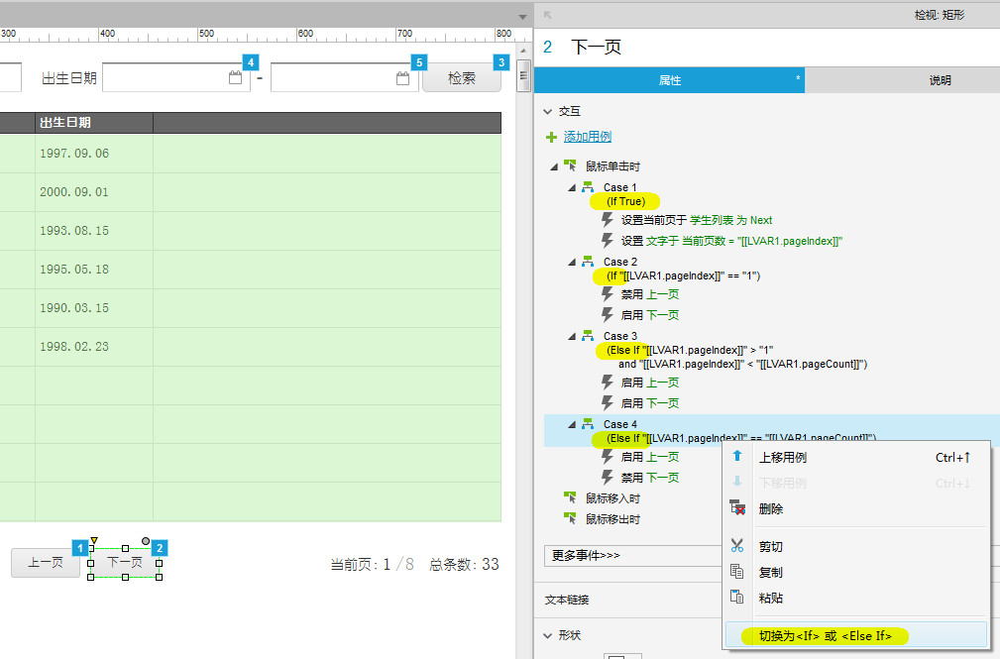
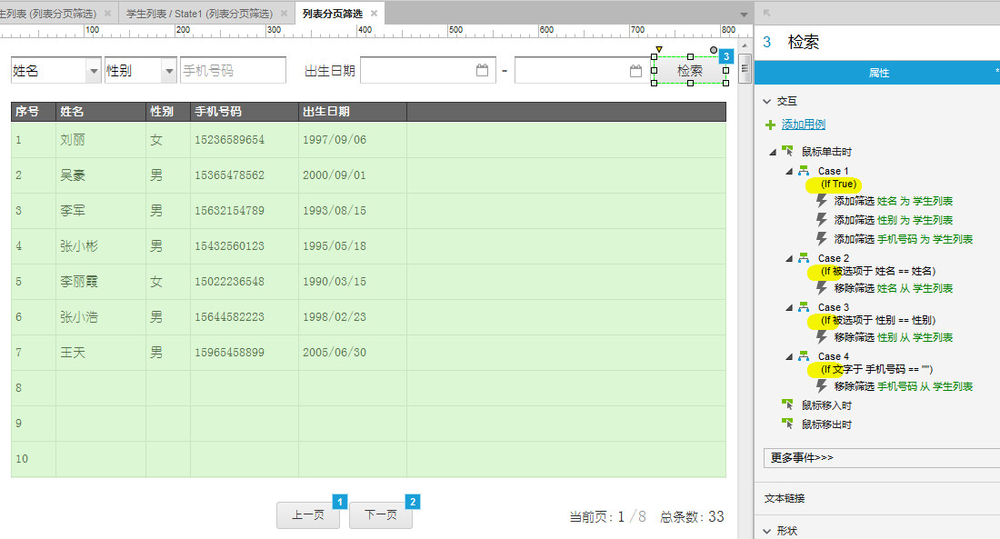
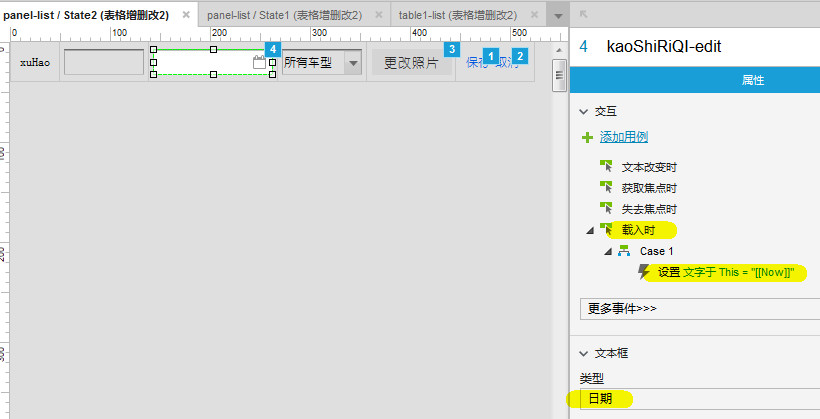

鼠标悬停于控件时显示为手型
除了选择控件可以保持箭头图标，凡是有点击交互动作的部件都会变成手型图标，悬停变化为手型图标的部件几乎没有，如果想要光标变成手形，可以给控件加空的点击事件。
关于提交按钮
提交按钮的填充颜色、边框颜色和其他大多数样式格式都被禁用了。取而代之的是生成原型后在浏览器中它会使用内建的样式。
不过，提交按钮可以改变大小和禁用。如果你想自定义你的按钮样式，请使用 形状按钮 Shape button
axure选中底层原件的方法
axure里经常会出现很多元件层叠，这种情况下如何选中底层元件呢？
方法：比如你有3层部件，左键点击最上层的，停一小下，再点击左键一下就会选择第二层的了，再停一小下，再点击左键就选第三层的了。。。点->停->点
只有动态面板才有的用例事件
拖动开始时、拖动时、拖动结束时、向左拖动结束时、向右拖动结束时，只有动态面板才有这些事件，其它如形状、图片、文本、链接、标题、按钮等都没有。
格式刷的应用
格式刷可以复制元件样式，包括交互样式也可以复制，然后将复制的样式应用到其它元件上，非常方便。
- 选中需要复制样式的控件；
- 点击格式刷（弹出窗口，窗口的样式就是需要复制的控件样式）；
- 点击格式刷窗口底下的“复制”按钮；
- 选择目标控件；
- 点击格式刷窗口底下的“应用”按钮。
对表格的操作
AxureRP自带的表格组件的编辑功能是比较弱的，一些常规的编辑操作都是不支持的，只能通过折中的方法来解决。
- 用矩形组件自己拼一个表格出来，不要使用Axure默认提供的表格，这是最傻的方法了，要调整表格大小的时候会非常麻烦，用矩形拼的时候，把需要合并单元格的部分，只使用一个矩形即可。
- 使用表格组件，在需要合并单元格的地方用一个矩形，把它们盖住。这个方法稍微好一点，调整的时候调整量比第一种小。
- 在需要合并单元格的地方添加几条白线或者是与背景色相同的线条，把表格的黑线遮住。 这个方法调整量又比第二种小一点。
- 在Word或者Excel中先把表格标记好，然后复制粘贴到AxureRP中，粘贴过来后会变成一张图片，要更改的时候就得更改源word或excel文件，再重新复制粘贴。
用例－条件判断
在用例上单击右键可以在 <If> <Else If> 之间进行切换，如图：


变量名与表达式的写法
变量名或表达式一定要写在 [[ ]] 中，如：
- 例一
- 正确写法：[[item.name == LVAR1 && item.sex == LVAR2]]
错误写法：[[item.name == LVAR1]] && [[item.sex == LVAR2]]
- 例二
- 正确写法：[[LVAR1 + 10]]
错误写法：[[LVAR1]] + 10
获取日期控制的值
只有为日期文本框预设一个值，如下图，才能获取到日期文本框中的值，否则无法获取；
